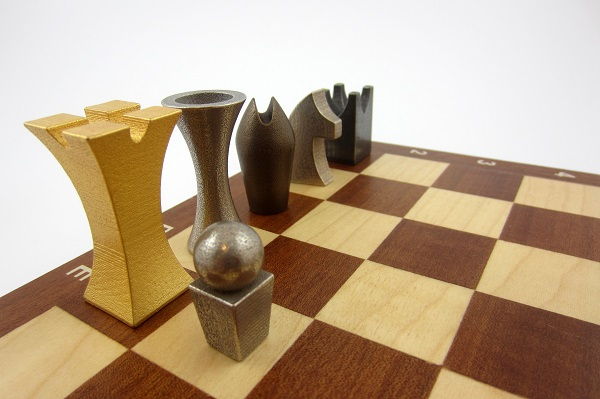

I start this journey down the web development path with little knowledge; armed only with courage and determination. Over the coming week's and month's, these pages will capture tangible results and the emotional side of this journey on the path to 'Check Mate')!
